suivant: Conclusion
monter: Avec rigueure
précédent: Le juste
Essayons de voir pourquoi l'autre est faux. Dans l'autre on essaie de ne pas tenir compte du rang des enfants. C'est une méthode qui est tout aussi juste, à condition de ne pas se tromper.
Avec cette méthode je vais essayer de mettre en rigueur le raisonnement faux qui donne
 et ce meme raisonnment mais corrigé et qui donne, oh,magie....
et ce meme raisonnment mais corrigé et qui donne, oh,magie....
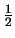
:
Raisonnement faux formalisé :
- Espace des possibles : { 2FILLES, 2GARCONS, MIXTE } : 3 éléments, car, vu qu'on ne tient pas compte de l'ordre MIXTE = fg ou gf
- SACHANT qu il y a un garçon il reste { 2GARCONS, MIXTE } : 2 élément
- Eventualités dans lesquelles "l'autre est une fille" : {MIXTE} 1 élément
- Donc probabilité =
!!
Mais la faute viens du fait que, dans l espace des possibles, les 3 evenement ne sont pas équiprobables. Si on regarde les familles de france avec 2 enfants, la répartition est :
- MIXTE: 50%
- 2GARCONS, : 25%
- 2FILLES, : 25%
Car le cas MIXTE contient en fait 2 sous cas de proba 25%. C'est la l'erreur.
Raisonnement juste :
- Espace des possibles : { 2FILLES, 2GARCONS, MIXTE } avec les probabilités 25%,25%,50%
- Sachant qu il y a un garçon il reste { 2GARCONS, MIXTE} avec MIXTE qui compte 2 fois plus que 2GARCONS. Intuitivement, si cet ensemble ``pèse'' 3 kilos, alors MIXTE en ``pèse'' 2 et 2GARCONS ``pèse'' 1 kilo.
- Eventualités dans lesquelles "l'autre est une fille" : { MIXTE } : 1 élément de "poids 2 sur 3"
- donc probabilité =
On peut reprocher l'utilisation la notion intuitive, mais non formelle de ``poids''. C'est uniquement dans un but pédagogique car la démonstration fait appel à la notion de probabilité conditionnelle 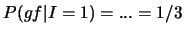
définie par :
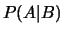
A sachant B
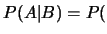
Alors :
- P(2F)=P(2G)=
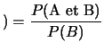
et P(Mix)=
-
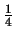
2G sachant "il y a un g"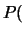
-
2F sachant "il y a un g"
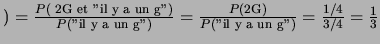
-
Mix sachant "il y a un g"
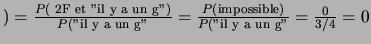
Ceci peut se reformuler sous forme de programme bayésien (figure 1) pour lequel une seule variable suffit pour definir une fratrie. Soit F le nombre de filles dans la famille :
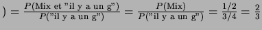
. D'après les hypothèses, 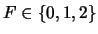
suit une loi binomiale.
boxed
figure
Figure 1:
Le Programme Bayésien donnant la probabilité que le 2ème enfant soit une fille.
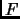 |
plain
figure
suivant: Conclusion
monter: Avec rigueure
précédent: Le juste
Pierre Dangauthier
2004-10-18